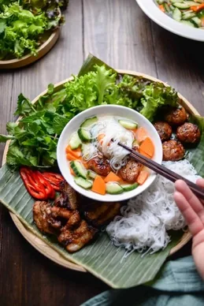
Bún chả Hà Nội
Vermicelles au porc grillé (style Hanoï)
- Dans l’assiette
- Vermicelles de riz, porc grillé, boulettes de porc, herbes, crudités marinées, sauce nước chấm
- Origine
- Hà Nội
J'en ai jamais mangé mais c'est iconique apparement
VIETNAM BELLY GUIDE
Les incontournables à découvrir du Nord au Sud.

Vermicelles au porc grillé (style Hanoï)
J'en ai jamais mangé mais c'est iconique apparement
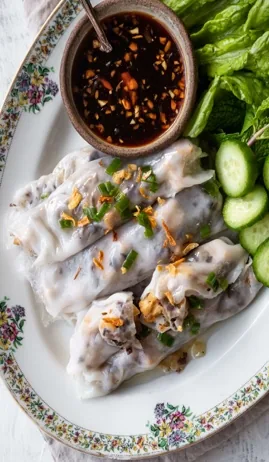
Raviolis vietnamiens vapeur
On en a mangé à Austerlitz quand tu attendais ton train. C'est plutôt une entrée
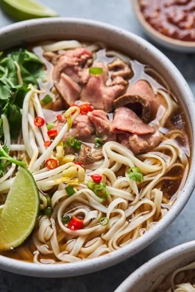
Soupe phở au bœuf (bo) ou poulet (ga)
Sinon tu trouveras souvent le nom "Pho dat biet" ça signifie "spécial" et il y a également des boulettes de viandes, des abats, foi, …
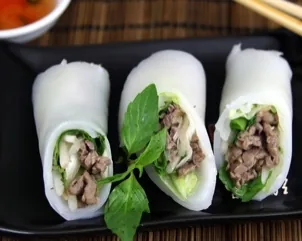
Feuilles de nouilles de pho, roulées autour de bœuf et d'herbes (comme des rouleaux de printemps)
J'en ai jamais mangé mais ça a l'air super bon
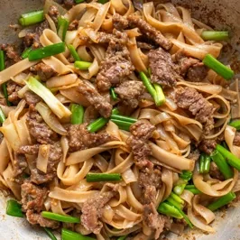
Nouilles de phở sautées au bœuf
L'un de tes plats pref, facile, efficace, simple
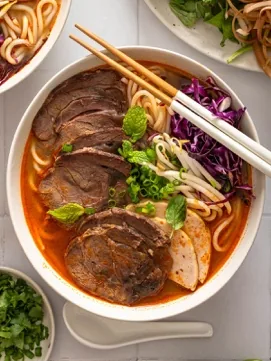
Soupe épicée de nouilles au bœuf
Moins fan de ce plat, mais pour le coup il est emblématique ! Attention les tâches partent très difficilement
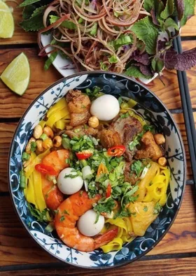
Nouilles de Quảng Nam
J'en ai mangé une fois je crois, c'est délicieux et tu peux faire des "bouchées" différentes, sachant la variété de viande
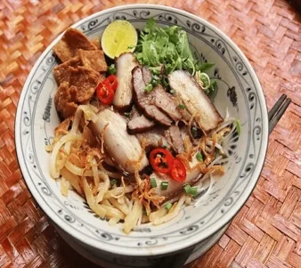
Nouilles de Hội An au porc
Pas mangé! NB : pas de soupe dans ce plat
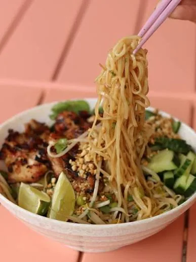
Nouilels "sèches"
T'as sûrement mangé ça à la maison, c'est souvent cuisiné avec du maggi / sucre / huile d'avocat chez moi pour la sauce. Elle est versée directement sur les nouilles fraiches puis on mélange, avec une soupe sur le côté. Excellent
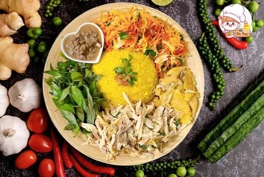
Riz au poulet de Hội An
Jamais mangé mais ça donne envie ! A mon avis le poulet est cuit dans un bouillon, ce qui le rend juteux
Riz brisé à la côtelette de porc
Valeur sûr que tu trouveras partout partout ! "Com tam" est le type de riz et "suong" la viande de porc grillée. Il existe différente variante où on te rajoute aussi du porc vapeur etc. Tu m'as vu mangée la "grosse" version à notre premier restau viet ensemble
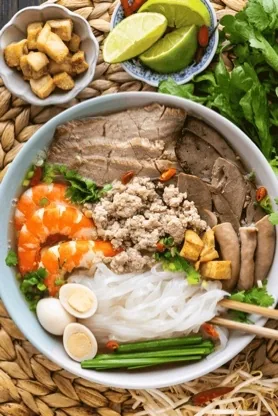
Soupe de nouilles façon Phnom Penh
C'est comme un pho, mais avec un bouillon plus léger, des pâtes plus fines et plus de toppings. C'est un de mes plats préférés, il est réconfortant et très équilibrés
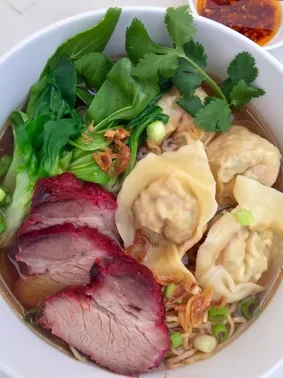
Soupe de nouilles aux raviolis wonton
Un pur délice. Souvent ils font un mix entre des nouilles de blé et pâtes de pho. Tu peux aussi demander sans nouilles
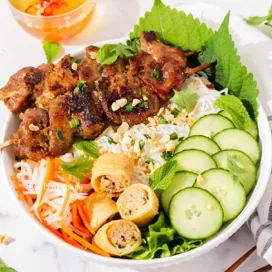
Vermicelles au porc grillé
C'est ce qui se rapproche le plus d'un bo bun, mais avec une viande marinée et grillée
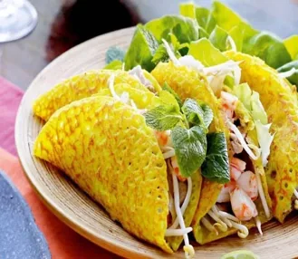
Grande crêpe croustillante du Sud
Souvent vendu comme "street food", un incontournable. Je sais que tu sais manger les crevettes non-décortiquée, mais pour infos, elles sont souvent ainsi dans ce plat
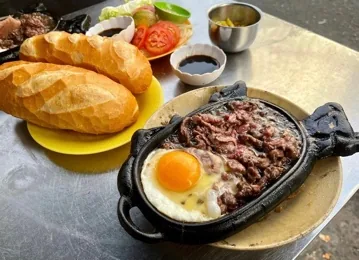
Bœuf sur plaque chaude avec œuf
Ma découverte de mon voyage 2024!!!! Souvent servi au petit déj mais se mange à toute heure finalement. Il y a surement une influence FR dans ce plat…. Je penses tu vas aimer. Plat servi dans une plat en pierre chaud, viande très tendre
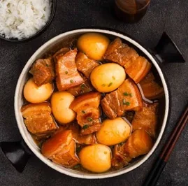
Porc au caramel et aux œufs
Le fameux porc au caramel ! Un plat sino-viet. On en mange souvent à la maison, tu as déjà goûté
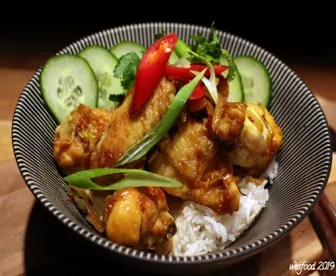
Poulet sauté à la citronnelle et au piment
Facile, simple à manger et très parfumé. BTW j'ai appris à le cuisiner, fait parti des plats favs
Aucun résultat pour cette recherche.